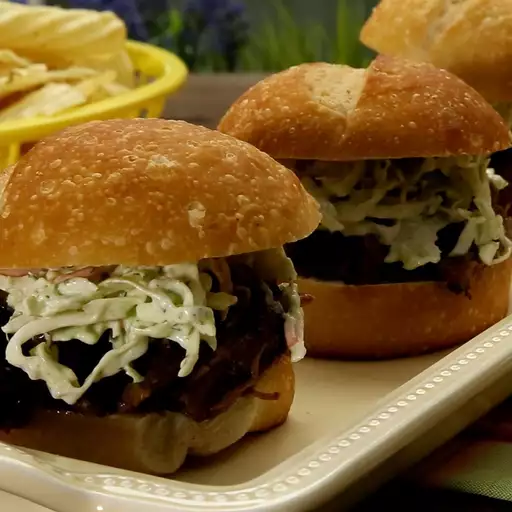

Home Page
Slow Cooker Barbeque

This slow cooker BBQ beef is an old recipe my mom used to make for us kids. It is so good it almost melts in your mouth! Serve on sub rolls.
Ingredients
- 1 (3 pound) boneless chuck roast
- 1 teaspoon garlic powder
- 1 teaspoon onion powder
- 1 (18 ounce) bottle barbeque sauce
- salt and pepper to taste
Steps to make it
- Gather all ingredients.
- Place roast into slow cooker. Sprinkle with garlic powder and onion powder. Season with salt and pepper.
- Pour barbeque sauce over meat.
- Cook on Low for 6 to 8 hours.
- Remove meat from slow cooker, shred, and return to slow cooker. Cook for 1 more hour.
- Serve hot. Enjoy!